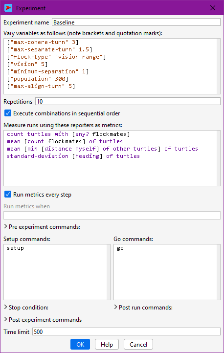

EES 4760/5760
Agent-Based and Individual-Based Computational Modeling
J. Magnolia Gilligan
| Team # | Project | Members |
|---|---|---|
| 1 | Business Investor | Rhett Adam, Alysia Shang |
| 2 | Telemarketer | Aliya Eissa, Blanche Stora |
| 3 | Business Investor | Thomas Doherty, Amelia Tejada |
| 5 | Telemarketer | Sawsan Ahmed, Yi He, Yidi Wang |
Download and open the “modified flocking model” from
https://ees4760.jmgilligan.org/models/class_09/modified_flocking.nlogox
It’s easiest if you right-click on the link and choose “Save As” and save the model in a folder on your computer.
flockmates,
nearest-neighbor
flockmates
nearest-neighbor is too close, the bird
separates by turning away from it.aligns: turns toward its flockmates
coheres: turns slightly toward the direction the rest
of its flockmates are flying.vision)flockmates
find-flockmates:
flockmates are all birds within vision
distance (“vision range” flock type)flockmates are the 6 nearest birds, regardless of
distance (“six closest”)flockmates is the one nearest bird, regardless of
distance (“closest”)separate: Turn away from nearest-neighbor
by up to max-separate-turn degreesalign: Turn toward center of flockmates by
up to max-align-turn degreescohere: Turn toward average direction
flockmates are flying, by up to
max-cohere-turn degreesHow to measure flock formation?
count turtles with [any? flockmates]
mean [count flockmates] of turtles
mean [min [distance myself] of other turtles] of turtles
standard-deviation [heading] of turtlesn-of, min-n-of, max-n-of,
other,turtles-on, turtles-at,
turtles-here, at-points
in-radius, in-cone,with, with-min, with-max
one-of, min-one-of,
max-one-of
nobody)Agentset category in NetLogo dictionaryTurn 5 random turtles red:
ask n-of 5 turtles [ set color red ]Now for each of those turtles:
ask turtles with [color = red] [
ask other turtles in-radius 5 [
set color green
]
]Now ask each green turtle to calculate the distance to the closest red turtle
ask turtles with [color = green] [
show min [distance myself] of turtles with [color = red]
]Now get the average over all the green turtles of the distance to the closest red turtle
show mean [
min [distance myself] of turtles with [color = red]
] of turtles with [color = green]Ask each green turtle to calculate the distance to the closest red turtle
ask turtles with [color = green] [
ask min-one-of turtles with [color = red] [distance myself]
[
show min [ distance myself ]
]Get the average over all the green turtles of the distance to the closest red turtle
show mean [
distance min-one-of turtles with [color = red] [ distance myself ]
] of turtles with [color = green]Measures of flocking:
count turtles with [any? flockmates]
mean [count flockmates] of turtles
mean [min [distance myself] of other turtles] of turtles
standard-deviation [heading] of turtlesChange one parameter (vision,
max-cohere-turn, or max-align-turn) and see
how it affects flocking.

Measures of flocking:
count turtles with [any? flockmates]
mean [count flockmates] of turtles
mean [min [distance myself] of other turtles] of turtles
standard-deviation [heading] of turtlesChange one parameter (vision,
max-cohere-turn, or max-align-turn) and see
how it affects flocking.
Run the experiment: remember to turn off Update view
and Update plots and monitors
flock-type
vision and
max-cohere-turn or max-align-turn)analyze_behaviorspace app at